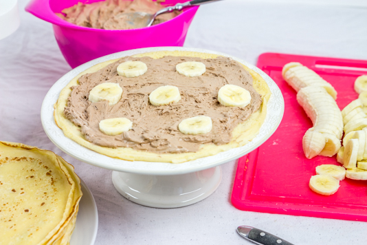
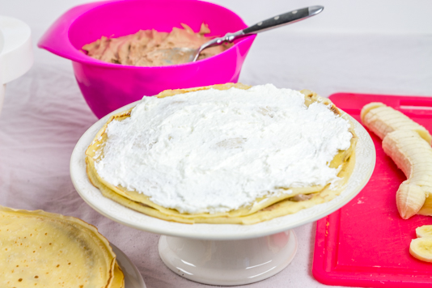
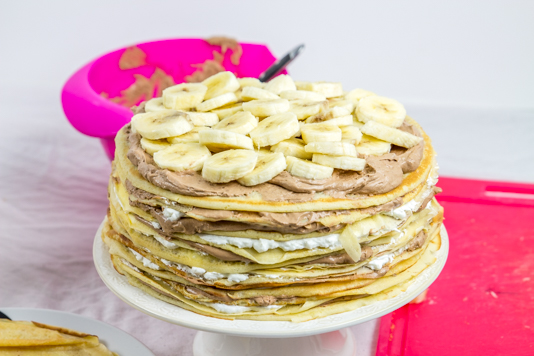
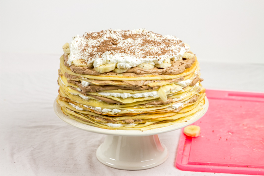

Gâteau de crêpes

C’est bientôt la chandeleur!!!!! Et je peux vous dire que vu les recettes qui vont paraître prochainement par ici vous allez pouvoir voir à quel point j’adore vraiment (vraiment beaucoup) les crêpes! La toute première recette pour la chandeleur cette année est donc celle du gâteau de crêpes au chocolat, à la banane et à la noix de coco (une vraie petite tuerie!!)
Avec cette recette, je poursuis mon expérience cidronomique débutée avec Val de Rance il y a quelque temps de ça (souvenez-vous de ma tourte au saumon ici) et encore une fois je ne suis pas déçue du voyage! Pour accompagner les petites bulles de mon cidre doux, je vous ai concocté un gâteau de crêpes absolument dément. En me relisant, j’ai un peu l’impression de dire ça à chaque recette mais je vous assure que oui c’est encore une fois carrément trop trop bon et je suis vraiment heureuse de partager avec vous ma recette!! Pour les saveurs de mon gâteau de crêpes je voulais vraiment du chocolat (et des bananes!!!) et j’ai longtemps hésité pour la noix de coco, pensant (bêtement) que certains n’allaient pas aimer. Finalement je suis vraiment ravie d’avoir fait ce choix qui a finalement fait l’unanimité et je peux vous dire que j’ai eu tout juste le temps de prendre la part en photo qu’il n’en restait déjà presque plus. « Ma part » en photo d’ailleurs parlons-en!!! Sur la photo c’est tout juste si elle ne se tord pas dans tous les sens. Le problème est que je l’ai prise en photo alors que je venais juste de cuire les crêpes et de monter le gâteau alors autant vous dire que c’était légèrement « bancale »… Bref tout ça pour dire que si vous voulez une part bien belle et bien nette il suffit de placer votre gâteau de crêpes au frais pendant 30 minutes au minimum et le tour est joué (mais nous ce jour-là on ne pouvait vraiment pas attendre). Pour en revenir au chocolat, ce n’est pas de la pâte à tartiner ni du chocolat fondu que vous trouverez à l’intérieur. J’ai choisi de mettre une mousse au chocolat pour avoir quelque chose d’un peu plus léger (je ne parle évidemment pas des calories^^) et avec les bananes, c’était parfait! Pour la crème chantilly à la noix de coco vous pouvez choisir de ne pas mettre de noix de coco si vous n’aimez pas ça et de la remplacer par de la vanille par exemple ce sera tout aussi bon j’en suis sûre!!
Je pense que je vais m’arrêter de parler car sinon je pense ne pas m’arrêter alors je vous laisse avec la recette de ce gâteau de crêpes et je vous dis à très vite pour une nouvelle recette (et certainement une nouvelle recette de crêpes^^).
Ingrédients
- Farine - 500g
- Oeufs - 6
- Cassonade - 2càs
- Vergeoise blonde (facultatif) - 2càs
- Lait - 850ml
- Beurre - 25g
- Rhum (facutltatif) - 1 bouchon
- Chocolat noir (ou au lait) - 180g
- Beurre - 25g
- Jaunes d'oeufs - 2
- Sucre - 1càs
- Crème fleurette entière à 30% - 450ml
- Extrait de vanille - 1càs
- Sucre glace - 1càs
- Crème fleurette entière à 30% - 300ml
- Mascarpone - 3càs
- Sucre glace - 3càs
- Noix de coco rapée
- Bananes coupées en rondelles - 5
Instructions
- Dans un saladier, verser la farine le sucre et la vergeoise
- Mélanger
- Faire un puits
- Casser les œufs dans le puits
- Verser le lait petit à petit tout en fouettant les œufs et en ramenant la farine vers le centre
- Faire fondre le beurre et ajoutez-le à la pâte
- Mélanger, ajouter le bouchon de rhum et mélanger
- Laisser reposer 1heure
- Faire cuire les crêpes 1 à 2 minutes de chaque côté
- Gardez-les de côté pendant la préparation de la mousse au chocolat et de la chantilly de coco.
- Dans une casserole sur feu doux, faire fondre le chocolat et le beurre
- Ajouter les jaunes d’œufs, le sucre et bien fouetter le mélange pendant 2 minutes. Réserver au frais.
- Dans le bol de votre robot (ou dans un saladier), verser la crème fleurette
- Faire monter la crème en chantilly
- Quand la crème commence à monter, ajouter le sucre glace
- Quand la crème est parfaitement montée ajouter le mélange avec le chocolat fondu, les œufs le sucre et le beurre
- Bien mélanger
- Réserver au frais minimum un heure
- Monter la crème en chantilly
- Quand la crème commence à bien monter ajouter le sucre glace
- Continuer de batte et ajouter le mascarpone
- Quand la crème est parfaitement bien montée, ajouter la noix de coco râpée
- Bien mélanger et réserver au frais jusqu'au moment de monter le gâteau de crêpes
- Placer une première crêpe sur l'assiette ou sur le support qui va vous servir de présentoir
- Tartinez-la de mousse au chocolat
- Recouvrez de quelques bananes Personnellement j'ai rajouté de la banane toutes les deux crêpes contenant du chocolat pour que ça ne fasse pas "trop" ( pour être plus claire : une couche de mousse au choco avec banane, une couche de crème de noix de coco, une couche de mousse au choco, une couche de crème de noix de coco et une couche de mousse avec banane)
- Poser votre deuxième crêpe par-dessus
- Recouvrir de crème de noix de coco et continuer ainsi de suite jusqu’à épuisement de la mousse et de la chantilly de noix de coco (il m'a fallu 18 crêpes!!)
- Recouvrir le dessus de mousse de chocolat, puis de bananes puis de chantilly de noix de coco!!
- Conserver au frais (au bout de 30minutes au frigo la part est bien nette et on aperçoit bien toutes les crêpes les unes au-dessus des autres)
- Dégustez sans plus attendre :-)))




Les tips de la communauté
Gâteau de crêpes innovant et très apprécié. L'association chocolat-banane-coco plaît beaucoup. Recette versatile qui offre d'excellentes possibilités de variantes pour les fêtes. La crème tient bien au réfrigérateur.
Astuces
- La crème Chantilly tient très bien une nuit au réfrigérateur avec un film alimentaire
- Recette versatile possible toute l'année, pas seulement pour la Chandeleur
Variantes suggérées
- Utiliser du remplissage à la vanille au lieu de la noix de coco
- Personnaliser le remplissage selon les goûts et les ingrédients disponibles
Ajustements signalés
- pas mal d’imagination pour penser à une tel chose alors bravo! 😀 Ça a l’air super bon en plus tu me donnes envie de sortir ma casserole pour me faire des crêpes. 🙂
- le consommer juste après ou on peut le laisser une nuit dans le frigo? Je pense surtout par rapport au chantilly…